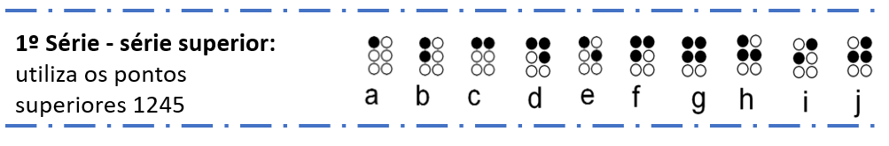

Sistema Braille
O Braille possui formação de letras e números, de forma que a combinação única dos pontos representam caracteres diferentes, sendo assim, possui as seguintes regras de disposição dos sinais:
-
A 1ª série chamada de série superior, faz o uso dos 4 pontos superiores da cela, 1245, que forma as letras de A até J;

-
A 2ª série conta com a adição do ponto 3 a cada um dos sinais da primeira série, então, é feito o uso da mesma sequência de pontos das letras citadas anteriormente, porém, adicionando o ponto 3 para representar as 10 próximas letras de K até L;
-
A 3ª série, complementando a 1ª série os pontos 3 e 6 geram as letras de U até Z , entretanto, a letra W não existia na Língua Francesa na época, foi adicionada posteriormente;
-
O sistema utiliza a noção de caracteres de escape, em que os códigos mudam de sentido quando precedidos por outros, como é o caso dos números de 1, 2, ..., 8, 9 e 0 que utilizam a mesma sequência de pontos da 1ª série, mas associado com o símbolo de numeral em Braille , como mostrado abaixo.
Voltar
Avançar